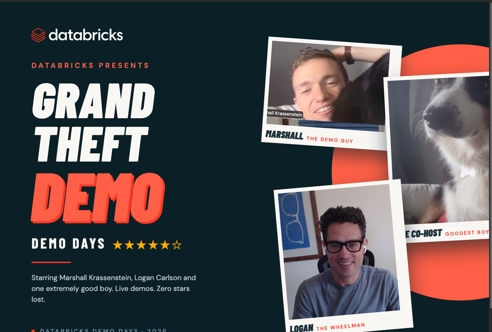

The heist we're stopping · in their words
Temperatures dropped, and 5 cold-weather styles sold out across ~30 northern stores while the exact same styles piled up unsold in ~40 southern stores. Same event, two ways to lose money, and nobody saw it in time.
Shoppers came in for a parka, the shelf was empty. The demand was real, the sale walked out the door, and the rest of the basket often went with it.
The same styles sat in warm-weather stores that would never sell them at full price. Discounted to clear the racks, the margin was handed away.
"Which stores act differently tomorrow because of this?"
Priya Raghavan · SVP Retail Operations
Why it keeps happening
Batch to real-time
The ask isn't another dashboard. It's the same governed data, turned into a decision on the floor.
The getaway plan · one connected product
Not three jobs. One crew: the operational data layer feeds the app, the app surfaces and prescribes the move, and every AI call inside it runs under a cost-and-safety control plane.
Governed UC data synced to Postgres for low-latency reads, writable tables for actions, native hybrid search. No second database, no data leaving the account.
A live view that flags the shortfall, an assistant that explains why and runs what-ifs, and a write-back action a manager approves. A closed loop.
Every AI call bounded by budget, blocked from runaway reads, and traced in inference tables. Spend that's capped, visible, and attributable per store.
Live demo · the hero moment
Denver, mid cold snap, and the top-selling parka (SKU-APP-04412) is gone. Meanwhile Store 0377 in Colorado Springs, ~100 miles away, is sitting on a pile of them. What's the best recovery move?
Live walkthrough of Grand Theft Demo: Store 0214 out of the Summit Down Parka → the explanation → the costed recovery options → the approved transfer from Store 0377 appearing on refresh.
The score · outcomes we defend
One cold snap put ~$10.4M on the table in a single event. Grand Theft Demo turns that guesswork into a move a manager can make the same day.
What the AI costs · bounded, visible, attributable
One assistant call left running overnight became a two-hour query that cost $1,200, and with no tracing in place, nobody could even tell what it did.
"What does a recommendation cost, and what share of company AI spend is this?"
Amara Nwachukwu · VP Finance, Technology
Cost per recommendation, the budget ceiling, and trace coverage across the app, the coding agent, and the MCP.
Why Databricks
The same governed Unity Catalog data serves the store floor at low latency. No second operational database to stand up, sync, and reconcile.
Branch off production in seconds, let a coding agent evolve the schema, validate, then promote. Nothing touches the live instance until it's proven.
Native hybrid search over the operational data. The assistant grounds its answers without shipping records to an outside service.
One gateway caps spend, enforces guardrails, and traces every call, so cost and safety are platform properties, not per-app afterthoughts.
Who's in the room
"Which stores act differently tomorrow?" The live view plus approved recovery actions, store by store.
"What does a recommendation cost?" The gateway dashboard: capped, attributable, reconcilable spend.
"Can this serve 400 stores without a nightly batch?" Lakebase synced reads at low latency, no second DB.
"Can I explain why the app said that, and show my work?" Inference-table traces back to the records behind every recommendation.
Technical depth · expect the hard questions
Synced UC table to Postgres for low-latency reads; writable tables isolate app state; reverse sync (SCD2) streams decisions back to Delta.
Every recommendation is traceable through inference tables to the inventory and order records behind it, so Hector can show his work in writing.
Budgets reject calls over threshold; a guardrail blocks all-data reads; the block itself is captured in the trace as proof it fired.
The evidence it stands on
Config alone isn't proof. Every claim ties to an export that shows it actually happened.
That's a wrap
★★★★★ ZERO STARS LOST
Starring Marshall Krassenstein as The Demo Guy · Logan Carlson as The Wheelman · one extremely good boy as The Co-Host.
Grand Theft Demo · NorthPeak Retail · Databricks Demo Days 2026 · Team LAKE